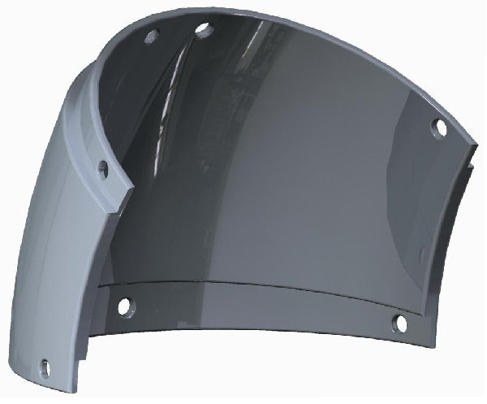
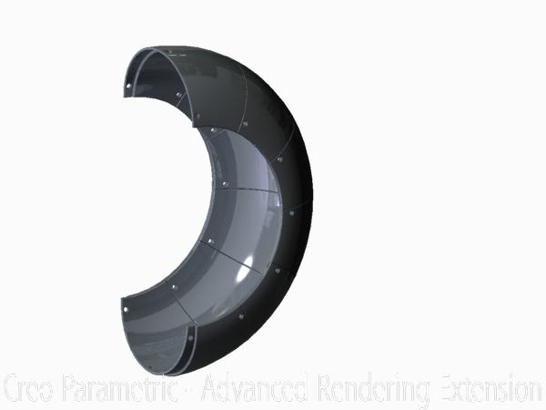

We’ve thoroughly proven that the tread of rubber bands is an effective method of ball collection, but as of yet it can only move the balls along the ground. We’ll need a way to move them upwards to the catapult bowl’s level. While we could use another motor to push the particles up and over the belt, it could get caught and we’d rather not take up another motor port. We decided to instead make a semicircular tube to guide the balls, with no motors of its own, but instead simply keeping each ball in contact with the center belt as it turns around to move back to the front of the robot.
After measuring how large the tube would have to be to house the ball, it was clear that it couldn’t be printed in one part (not that I would have if I could - the infill would be a nightmare to remove), so instead I made a model for a segment of it which can be printed several times and then bolted together at a few built-in sockets. Each segment accounts for 30 degrees of the 180-degree arc we plan to build. A segment can be seen below.
The model prints well, connects easily, and sockets the particles perfectly, but it lacks the friction required to keep them from spinning in place instead of moving up the tube. We were able to solve this by applying a stripe of memory foam to the inside of the tube with double-sided tape.
